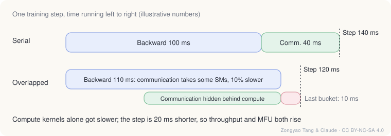
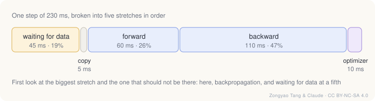

The thread: the most watched number, "GPU utilisation", does not measure efficiency → the real goal is throughput → throughput has to be compared with the hardware's ceiling, which is MFU → every number has to rest on a reproducible baseline → finally, split the time of one step and see how much each stage takes.
Part 0 · The big picture and measurement0.2 The language of measurement: utilisation, throughput and MFU
Translated by AI (Anthropic's Claude) from the Chinese edition. The Chinese original is the reference.
This unit answersHow do you know whether a training run is going "well"? Which number should you look at?
Follows 0.1: now that we know what the pipeline looks like, we need to measure it. Measure it wrongly and every later optimisation may be wasted effort.
- GPU utilisation measures "busy or not", not "busy doing something worthwhile"
- The goal is throughput: samples or tokens processed per second
- MFU: what percentage of the hardware's peak compute you actually use
- Optimisation starts from a reproducible baseline
- Split the time of one step: how much each stage takes
Explanation
1GPU utilisation measures "busy or not", not "busy doing something worthwhile"
The GPU utilisation shown by nvidia-smi means: over a short sampling window just past, the percentage of time during which some kernel was running on the GPU. It does not care how many of the arithmetic units that kernel used, nor whether its work was useful.
The definition of this number is narrow: every so often the driver samples, and looks at the fraction of time in which "at least one kernel is running".
Its three blind spots follow directly:
- A tiny kernel counts as "busy". A kernel that uses 1% of the arithmetic units, running non-stop, gives 100% utilisation.
- Bandwidth-bound counts as "busy". The kernel is running, but its arithmetic units spend most of the time waiting for data from GPU memory; utilisation is still 100%.
- Useless work counts as "busy". Repeated computation, and intermediate reads and writes that could have been fused away, all count towards utilisation.
The other way round, it reliably tells you one thing: if utilisation is clearly below 100%, then for part of the time nothing at all was running on the GPU, that is, "waiting for data", "waiting for orders" or "waiting for the other GPUs" from 0.1. That is the only question it is fit to answer.
Be careful with how the number itself is measured, too. It is an average over samples: if the monitoring system averages every 5 minutes, a saw blade of "half a minute fully loaded, half a minute idle" is smoothed into 50%, and the pattern disappears; if samples are missing and the system fills the gaps with 0, stretches of "0% utilisation" appear out of nowhere. Before analysing a curve, find out how it was sampled.
Troubleshooting: what three typical utilisation curves tell you
Look at a minute or two sampled once a second (
nvidia-smi dmonornvidia-smi --query-gpu=utilization.gpu --format=csv -l 1); the shape of the curve tells you far more than the average.A saw blade: near 100% for a while, then very low, repeating regularly.
The most common cause is a data supply that cannot keep up: the GPU finishes one batch and the next has not arrived. Check the number of DataLoader workers, whether the CPU is full, and how fast storage reads. If the period is long (once every few tens of seconds), see whether it is regular validation, checkpointing or logging.Steady at a middling level, say 40%–60%.
The GPU's work arrives in short pieces with gaps between them. Common when a model is made of very many small operators and time goes to Python and framework scheduling (waiting for orders). If a larger batch raises throughput almost in proportion, that confirms it.Always near 100%, but training is still slow.
Utilisation has nothing left to tell you here. Look at throughput and MFU instead (the next two cards), then use a profiler to find the kernels that take the most time.With several GPUs: all of them dip together, periodically.
Most likely gradient synchronisation: at each step's synchronisation everyone waits. Compare with single-GPU throughput and compute the scaling efficiency. If only one GPU's curve differs from the rest, look hard at that GPU and its links.Two easily missed disturbances: polling nvidia-smi at a very high rate affects the samples itself; and numbers seen inside a container or on a cloud platform's dashboard may have been aggregated, so confirm their sampling interval first.
An analogyLike measuring a restaurant by "the fraction of time with a customer present": one customer sitting there all day gives 100%, though the restaurant may have a hundred tables and only one in use.
So low utilisation always means a problem (the GPU is waiting), but high utilisation does not mean there is none. It can show that "the GPU is waiting", never that "the GPU is used well".
Used later in The goal is throughput: samples or tokens processed per secondSeveral processes sharing one GPU: they take turns by default, not run at the same timeTraining traffic: very few flows, each huge, bursting together, repeating every stepThe GPU Operator: installing the whole set of components that makes GPUs usable in containers- If utilisation does not stand for efficiency, what should we look at? Go back to what training is for.
2The goal is throughput: samples or tokens processed per second
Training wants "how much useful work is done per unit of time", that is, throughput: samples per second, or tokens per second. Every optimisation must in the end show up in this number.
Throughput's merit is that it maps straight onto the outcome you care about: how many hours, and how much money, to train on this data. Double the throughput and the training time halves.
Three things to watch when using it.
Choose the right unit. Language models use tokens per second, because samples differ in length; image models use samples per second. With several GPUs, say whether it is per GPU or the total.
Measure the steady state. The first steps include loading the model, compilation and warming caches, and are much slower than later ones. Skip the start and average a stretch in the middle.
Throughput is not the only number to hold. Some "speed-ups" are really trades:
- a smaller batch or sequence length: each step is faster, but each step also processes less data;
- lower precision: faster, but the model gets worse;
- some computation dropped: and memory overflows.
So a complete record has at least four things: throughput, MFU, peak memory, and model quality (the loss or an evaluation metric). Only with the four together can you tell whether a change truly gained something or just moved the cost elsewhere.
An analogyA factory is judged by how many good products it turns out each day, not by how long its machines are switched on.
So any report of an optimisation should give the throughput before and after, and also record peak memory and model quality, to make sure the speed was not bought with something else.
- Throughput is an absolute number: is 100,000 tokens a second fast or slow? To answer that, you need a yardstick.
3MFU: what percentage of the hardware's peak compute you actually use
MFU (Model FLOPs Utilization) = the rate of useful arithmetic the training actually achieves ÷ the hardware's theoretical peak rate. It answers: of what this GPU could do, how much do you use?
Computing MFU takes two numbers.
The numerator: the arithmetic rate the training actually needs. For a Transformer there is a handy estimate: each token processed takes about 6N floating-point operations for forward plus backward, where N is the number of parameters. (In the forward pass each parameter takes part in one multiply-add, about 2N; the backward pass computes two gradients, with respect to the activations and to the weights, about 4N.) So the actual rate ≈ 6N × tokens processed per second.
The denominator: the hardware's peak rate. The TFLOPS on the GPU's datasheet. Choose the figure for the precision you use: training in bf16, use the Tensor Core half-precision peak.
Divide one by the other and you have MFU. Note that the numerator counts only "the arithmetic the model itself needs", regardless of how much you actually made the GPU do. Repeated or useless work does not raise MFU, and that is exactly why it is more honest than utilisation: utilisation measures "is the GPU busy", MFU measures "how much the busyness produced".
How to read it:
- The PaLM paper reports an MFU of 46.2%, which counts as very good for large-model training.
- It never reaches 100%. The numerator credits only the matrix multiplications with parameters; while the GPU does anything else, the clock keeps running and the numerator does not grow. Bandwidth-bound operators such as normalisation and activation functions spend their time reading and writing memory while the arithmetic units mostly wait; data loading and communication do no floating-point work at all. A further reading works out the time budget of one layer.
- If it is in single digits, the problem is usually not the kernels but other stages of the pipeline: data, orders, communication.
MFU has its blind spot too: it measures "how much of the compute is used", not "how soon training finishes". With the model, the number of GPUs and the precision unchanged, the two rise and fall together; change any of these and they can move in opposite directions. Double the GPUs, for example, and total throughput rises while each GPU's MFU falls, because there is more communication. And MFU must be taken over the time of whole steps: when communication overlaps computation, the matrix multiplications seen in the profiler get slower (communication takes some of the SMs), yet the step as a whole gets shorter. So read MFU together with throughput; the goal is always throughput.
Hands-on: compute the MFU of your own training
Take GPT-2 with 124M parameters, trained in bf16 on one A100.
Step 1: measure throughput. Skip the warm-up at the start and take a steady stretch. Suppose each step processes 16 × 1024 = 16384 tokens and takes 0.11 seconds (synchronised before and after timing; see the timing method in 3.1): throughput = 16384 ÷ 0.11 ≈ 149,000 tokens/second.
Step 2: the numerator. Each token takes about 6N = 6 × 1.24×10⁸ = 7.44×10⁸ operations. The actual rate = 7.44×10⁸ × 1.49×10⁵ ≈ 1.11×10¹⁴ operations/second, that is, 111 TFLOPS.
Step 3: look up the denominator. The A100's peak for half-precision arithmetic on Tensor Cores is 312 TFLOPS.
Step 4: divide. MFU = 111 ÷ 312 ≈ 36%.
A few things to watch:
- 6N is an approximation. It leaves out the part of attention that grows with the square of the sequence length, so it underestimates for very long sequences; and it counts in N the embedding table, which is only looked up, never multiplied, so for small models whose input and output each have their own table it overestimates (GPT-2 shares one table between them and is not affected). A further reading in 1.5 works out both accounts. For more accuracy, count the forward pass's operations with a tool (such as
fvcoreortorch.utils.flop_counter) and multiply by 3. - The denominator must match the precision. If you actually run fp32 but divide by the half-precision peak, MFU is badly underestimated.
- With several GPUs, the numerator uses the total throughput of all GPUs and the denominator the sum of their peaks.
Once you have this number, record it with throughput and peak memory. From then on, these three are what every optimisation is compared against.
Further reading: why MFU never reaches 100%: the time budget of one layer
MFU credits one kind of work. The numerator 6N counts only the matrix multiplications with parameters. Put another way: MFU = the time this credited work would take at peak ÷ the time actually spent. While the GPU does anything else the actual time keeps running and the first figure does not grow; any time spent on uncredited work pulls MFU down.
Why bandwidth-bound operators weigh so much. Normalisation, activation functions and residual additions do only a few operations per element, yet read the whole tensor from memory once and write it once: a few operations per byte read or written, fewer than one for a residual addition. To keep its arithmetic units busy an A100 needs about 200 per byte (312 TFLOPS ÷ 1.55 TB/s, the ridge point of 3.4). So their time is set entirely by memory bandwidth; during it the arithmetic units mostly wait, and MFU's numerator hardly grows.
The budget of one layer. One layer of GPT-2 small: batch 16 × sequence 1024 = 16384 tokens, hidden size d = 768, bf16, an A100 (peak 312 TFLOPS, memory bandwidth about 1.55 TB/s), attention by Flash Attention (4.4). Take the ideal case first: every operator runs at its own limit, matrix multiplications at full compute and the rest at full bandwidth, with no gaps between them.
One layer, forward + backward How it is reckoned Ideal time Matrix multiplications with parameters (the part 6N credits) 6 × 16384 × 12 × 768² operations ÷ 312 TFLOPS 2.23 ms The two matrix multiplications in attention with the causal mask about 3 × 2 × 16 × 1024² × 768 operations ÷ 312 TFLOPS 0.25 ms Two normalisations, GELU, two residual additions about 450 MB read and written forward, 600 MB backward, ÷ 1.55 TB/s 0.68 ms Total 3.16 ms Only the first row is credited, so MFU's ceiling is 2.23 ÷ 3.16 ≈ 71%: even with every operator perfect, nearly 30% of the time goes on uncredited work.
Reality discounts it further:
- Matrix multiplications do not reach peak themselves: data has to be read in first, tiles have edges, and the last wave of tiles is often not full (3.3, and the "nice numbers" of 1.5). The smaller the matrices, the bigger the discount.
- Bandwidth-bound operators do not reach full bandwidth either, and every kernel launch carries its overhead (2.3).
- Then there are data, communication, the optimizer step, and the kinds of waiting in 0.1.
So for a model as small as GPT-2 small, measured MFU falls well short of 71%; PaLM's 46.2% was achieved on far larger models.
If attention does not use Flash Attention. The 16 × 12 × 1024 × 1024 matrix of attention scores (about 400 MB in bf16) has to land in memory, and scaling, masking and softmax each pass over it, reading and writing about 0.8 GB a pass. A single pass is more than all the normalisations, activation functions and residual additions of the forward pass in the table put together (about 450 MB). Saving this block is what 4.4 is about.
Why larger models reach a higher MFU more easily. The work with parameters grows with d² per token; the reading and writing of normalisation and activation functions grows only with d. Going from d = 768 to 4096, the first grows about 28 times and the second only about 5 times, so the bandwidth row weighs far less. Fusion (4.2, torch.compile) raises MFU for the same reason: folding normalisation and activation functions into neighbouring kernels saves the trips that carry whole tensors to and from memory.
Further reading: when MFU and throughput move in opposite directions
Start from the formula. MFU = 6N × tokens processed per second ÷ (number of GPUs × each GPU's peak). With the model (N), the number of GPUs and the precision (the peak) unchanged, only "tokens per second" varies: throughput up by a tenth, MFU up by a tenth, and one cannot fall while the other rises. So when you see them move apart, it is one of the three cases below.
One: the number of GPUs changed. Going from 8 GPUs to 16 means more communication, and the scaling efficiency is only 90% (7.1). Say 8 GPUs give a million tokens per second at an MFU of 40% (illustrative figures):
Throughput (tokens/s) MFU per GPU GPU-time per million tokens 8 GPUs 1 million 40% 8 GPU-seconds 16 GPUs 1.8 million 36% about 8.9 GPU-seconds If you want to finish sooner, 16 GPUs win; if you want each token to cost less (billing by GPU-hour), 8 GPUs win. MFU answers "is the money well spent", throughput answers "how soon will it finish".
Two: the denominator changed. On a GPU that supports fp8 (an H100, say), switching training from bf16 to fp8 speeds up the matrix multiplications and raises throughput by 30%; but fp8's peak is twice bf16's, and measured against the fp8 peak, MFU goes from 40% to 26% (illustrative figures). So say which peak an MFU is reckoned against.
Three: what was measured was not the whole step. This is the case of overlapping communication with computation. Data parallelism on 8 GPUs, within one step (illustrative figures):
- Without overlap: the backward pass finishes, then the gradients are all-reduced. 100 ms of computation, 40 ms of communication, a step of 140 ms.
- With overlap: gradients start going out halfway through the backward pass, as soon as part of them are ready (the buckets of 7.1). The communication kernels take some of the SMs and compete for memory bandwidth (6.2), the matrix multiplications running alongside slow down by 10%, and computation becomes 110 ms; most of the communication is hidden behind it, and only the last bucket is left exposed, about 10 ms. A step of 120 ms.

Overlap slows the compute but shortens the step Step Compute MFU over the whole step Efficiency of the compute kernels alone Without overlap 140 ms 100 ms 30% 42% With overlap 120 ms 110 ms 35% 38% The credited work of this step takes 42 ms at peak: 42 ÷ 140 = 30%, 42 ÷ 120 = 35%; counting the compute phase alone, 42 ÷ 100 = 42%, 42 ÷ 110 = 38%.
Throughput rose about 17%, and MFU over the whole step rose with it; what fell is the efficiency of the compute kernels alone, the matrix multiplications seen to slow down in the profiler. Take that figure for MFU and you get the illusion of "MFU down, throughput up". MFU has to be taken over wall-clock time: a whole step, or the total time of a stretch of training.
In short. With conditions unchanged, MFU and throughput rise and fall together, and either will do; when conditions change, read them separately: MFU for efficiency and cost, throughput for how soon it finishes. The goal is always throughput, or more exactly, the total time to train to the result you want.
An analogyLike a high-speed line designed for 300 km/h whose trains average 120 km/h: an MFU of 40%. It tells you how much room there is, and reminds you that some of the gap cannot be closed.
So throughput tells you "how fast now", MFU "how much faster it could be". Large-model training done well sits at forty or fifty percent; a few percent means a basic problem has not been solved.
- Throughput and MFU are measured. Measured wrongly, even the best metric means nothing.
4Optimisation starts from a reproducible baseline
A baseline is a set of numbers measured under fixed conditions that can be measured again. Without it you cannot tell whether a change made things better, worse, or just fell within the noise of measurement.
A trustworthy measurement does the following.
Fix the input. The same batch size, the same sequence length. Best of all, feed one fixed batch again and again to isolate the effect of data loading first; measure the data pipeline separately when you need to.
Warm up. The first steps include one-off costs: loading libraries, allocating memory, torch.compile compiling, caches warming. These are not steady-state performance.
Synchronise before timing. The GPU executes asynchronously; the CPU hands out a task and returns. Stop the clock without first waiting for the GPU to finish and you have measured only the time to "place the order" (3.1 goes into this).
Measure many times and look at the spread. Run a few dozen steps and average, and look at the gap between the fastest and the slowest. If two runs differ by 5% on their own, an optimisation that "gained 3%" shows nothing.
Record the environment. GPU model, driver and PyTorch versions, precision settings, whether compilation was on. When you want to reproduce it weeks later, this is what you go by.
With a baseline the way of working is simple: change one thing → measure the same way → compare with the baseline → write it down. Slow, but every step holds. Skipping steps looks faster, but as soon as a result does not match expectations, you have to go all the way back and check everything again.
An analogyLike weighing yourself: only if you always weigh in the morning before breakfast, on the same scale, can the numbers be compared.
So change one thing at a time, measure again the same way, compare with the baseline. Change three things and measure once, and you do not know which one did it.
Used later in Split the time of one step: how much each stage takesThe order of debugging: start at the smallest scale, and first make the model overfit one batchThe easiest optimisation: preprocessing that can be done in advance should not wait until trainingFirst work out "what it should be", then see how far the measurement falls shortSourcesBest Practices §8.1 Timing- The baseline gives you a total. A total only says "fast or slow"; to know "slow where", you have to split it.
5Split the time of one step: how much each stage takes
The total time of a training step = waiting for data + copying + forward + backward + gradient synchronisation + optimizer + the rest. Split the total across these stages and look first at the largest.
There are coarse and fine ways to split the time; coarse first, then fine.
Coarse: put in your own timestamps. At a few key points in the training loop, synchronise and record the time: after getting the batch, after copying it to the GPU, after the forward pass, after the backward pass, after the optimizer. The difference between neighbouring points is the time of that stage. A dozen lines of code give you a table such as:
- waiting for data 45 ms
- copying 5 ms
- forward 60 ms
- backward 110 ms
- optimizer 10 ms
One glance shows it: waiting for data is a fifth of the step and worth looking at first; the optimizer is only 4%, and optimising it is pointless.

What the coarse split looks like (the numbers are the example in the text) (The synchronisations added for the timestamps slow the program down, because they break the overlap between CPU and GPU. So use this method only to see the proportions of the stages, and remove it when measuring total throughput.)
Fine: use a profiler.
torch.profilerrecords how much time each operator spent on the CPU and on the GPU, and can draw a timeline that shows where the GPU has gaps and what the CPU was doing during them. 3.1 explains how to read its output.With the split in hand, do three things against the pipeline of 0.1:
- Find the largest stage. It sets the limit of what optimisation can gain: a stage that takes 20% of the time, optimised away to nothing, makes the whole only 25% faster.
- Decide which kind of waiting it is (for data, on compute, for orders, for the other GPUs).
- Find the cure in the corresponding part of the course, apply it, and split again. Once a bottleneck is gone, the next largest stage comes to the surface.
That is the whole cycle of performance work: measure the total → split it → find the largest → change it → measure again.
An analogyLike checking your electricity bill: the total being high is no use; you need to know how much the air conditioner, the water heater and the fridge each use before you know where to save.
So the profiler's job is this splitting. Once split, go back to the pipeline of 0.1, see which kind of waiting the largest stage is, and look for the cure in the corresponding part.
Builds on Optimisation starts from a reproducible baselineOne training step is a pipeline of stages in series; the slowest stage sets the speedUsed later in The GPU is waiting for data: check the data pipeline firstMeasure first, then optimise: the bottleneck is often not where you thinkRule things out layer by layer, from the bottom up: link → bare RDMA → NCCL → frameworkHow often to save: a balance between the cost of saving and the cost of losing
Putting it together
GPU utilisation only says whether the GPU is busy, not whether the work is worth it; throughput is the goal; MFU tells you how far you are from the hardware's ceiling; these numbers must be measured on a reproducible baseline; and only by splitting the time across the stages do you know what to optimise.
Test yourself
Without looking back at the explanation, say it in your own words.
- What does nvidia-smi's GPU utilisation actually measure? Why does 100% not mean efficient?
- Why should the goal of optimisation be throughput rather than utilisation? What else should be recorded along with it?
- How is MFU defined? How does it differ from GPU utilisation?
- When measuring training performance, what makes a "reproducible baseline"?
- How do you split the time of a training step across the stages of the pipeline? What do you do with the split?